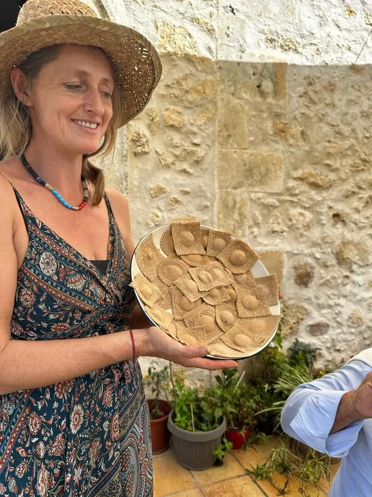
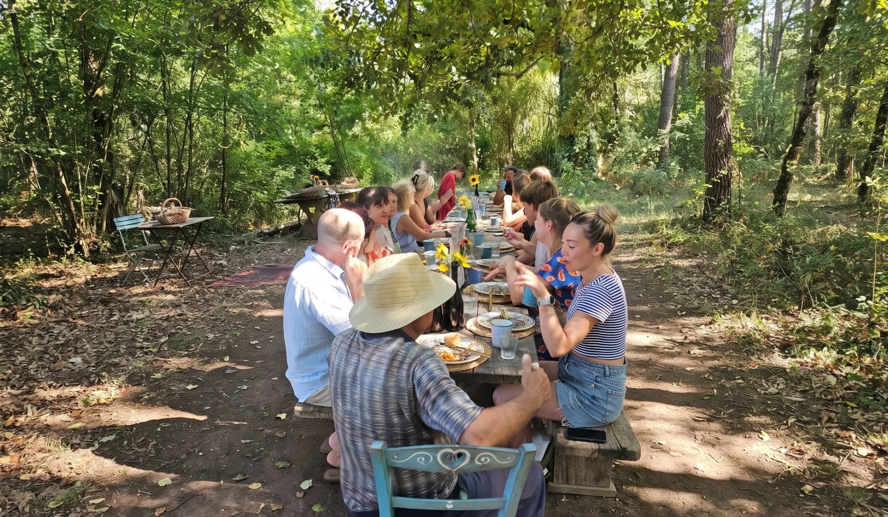
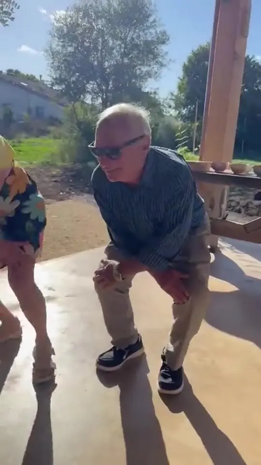
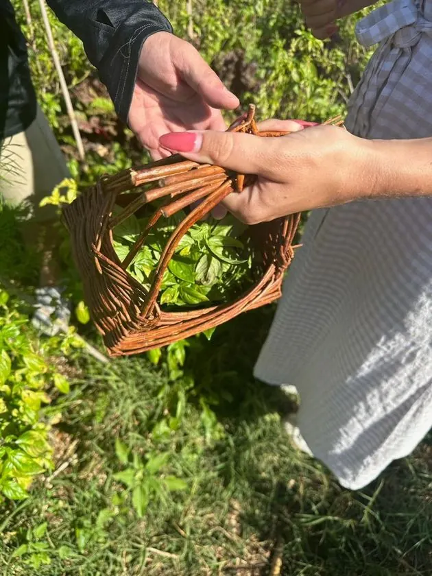
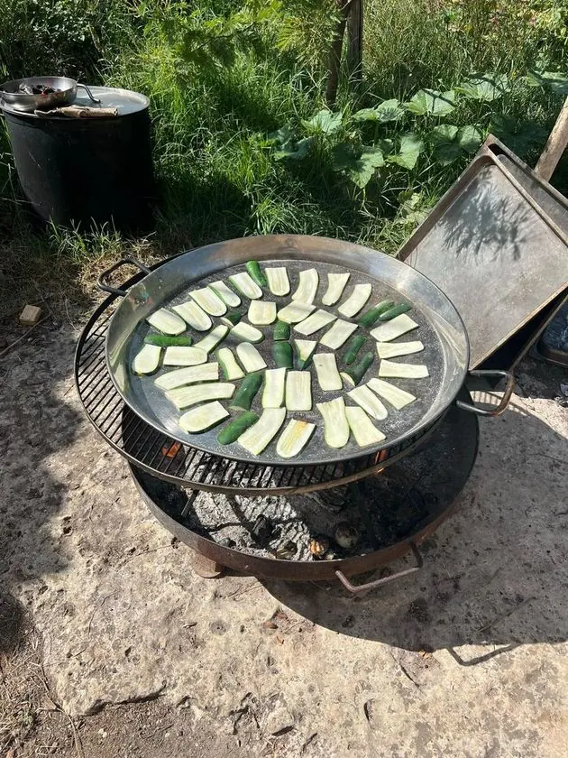

Music
 Watch: music at the table
Watch: music at the table
Someone always finds an instrument, or a rhythm on the edge of the table. Music is how the table warms up.

Tap for soundAn ancient way of sitting at the table, more than 2,000 years old. You will not watch it. You will live it.

In ancient Greece and Rome, a meal was a ceremony. People sat together for hours, and everyone brought something of their own to share.

Almost everywhere, this way of sitting together was lost. In Sicily it survived as a game played at the family table, handed down from grandparents to grandchildren.
They are among the very few keepers left. They received it from their grandparents, and they pass it on at every Sunday lunch.
You sit down as a stranger at one long table. By the end, guests of every religion and every race are finishing each other’s stories, in peace.
The game stays a surprise. But this much we can tell you: at the old table, everyone brings something of their own.
Watch: music at the table
Someone always finds an instrument, or a rhythm on the edge of the table. Music is how the table warms up.
 Watch: poetry at the table
Watch: poetry at the table
A few lines known by heart, in any language. Guests bring words from home, and we share the ones this land has kept.
 Watch: songs at the table
Watch: songs at the table
Songs from Sicily, and from every country our guests come from. Nobody needs a good voice, only the wish to share one.
 Watch: dancing at the table
Watch: dancing at the table
Sooner or later someone stands up, and the table follows. Nobody is asked to dance. It just happens.
 Watch: how lunch ends
Watch: how lunch ends
Guests who met that morning leave like old friends. How it happens is the surprise. Come and play it with us at the Sunday lunch.
Book the Sunday Lunch
Watch: dancing after lunchThey join in with everyone else, and are often the bravest singers at the table.
Toast with water or our homemade soft drinks. The game is the same.
Nobody is pushed. A short story or a few kind words count as much as a song.








Sunday lunch, served every day of the week. Choose your date and we will send everything you need.